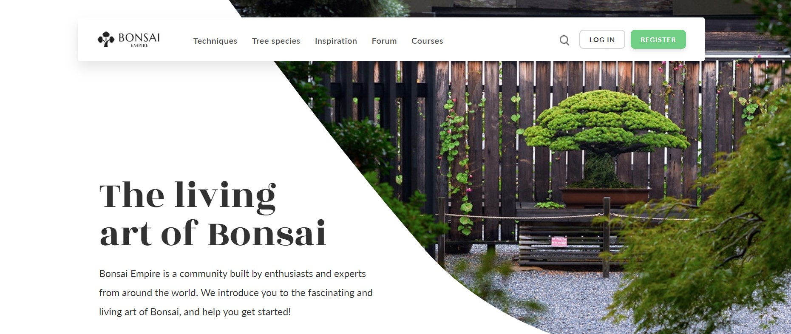
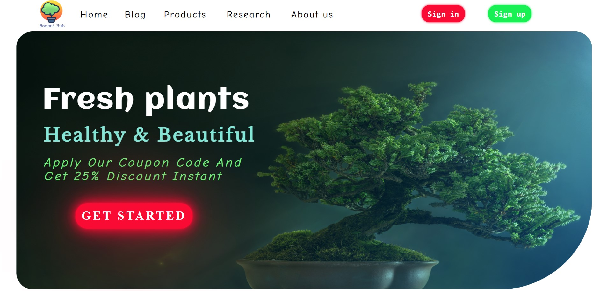
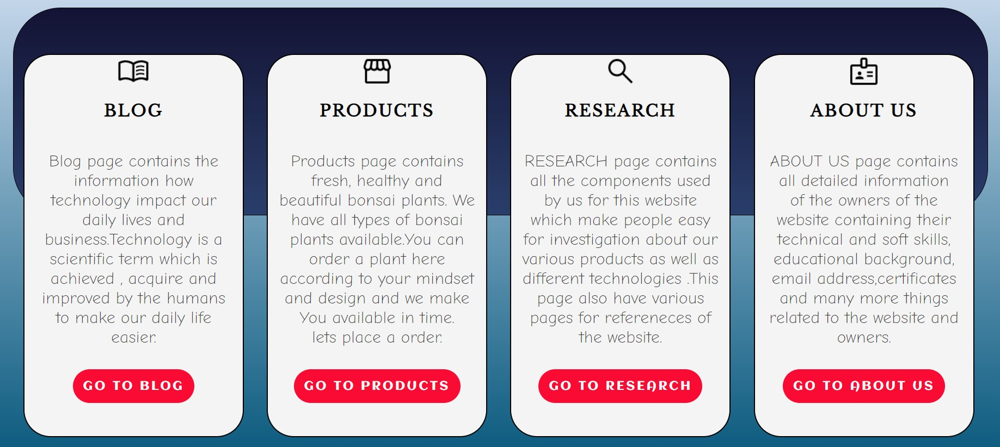
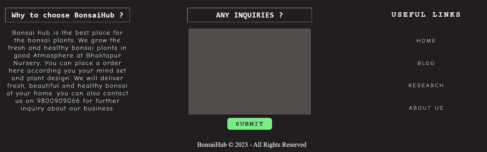
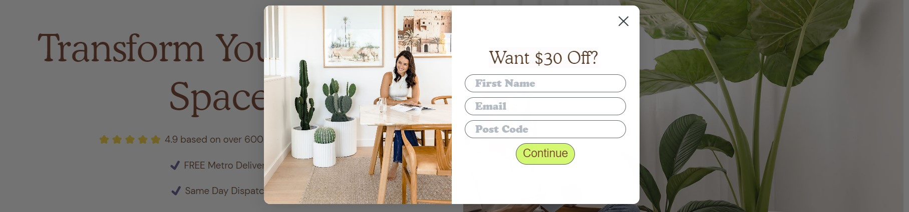
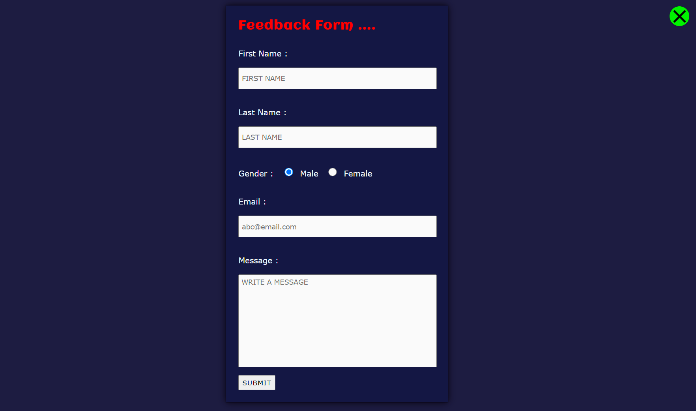
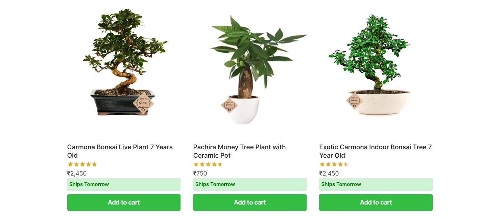
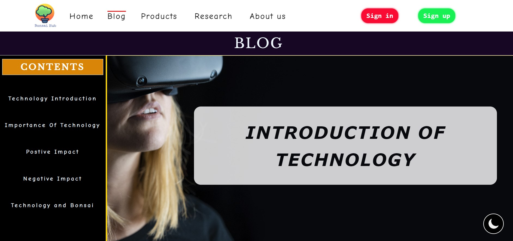
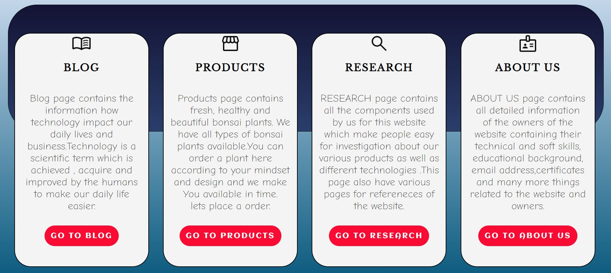
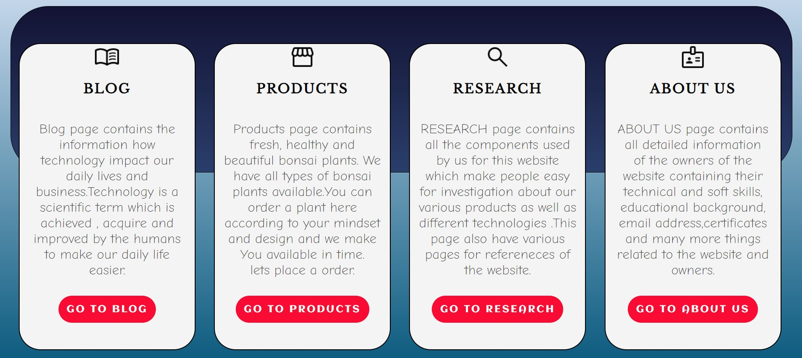

Welcome to the research page for our website, where we will detail the
various techniques and resources we utilized in the creation of this
site. This page will provide you with an in-depth look at the tools and
ideas that were instrumental in the development and design of our
website. Our process involved gathering inspiration from a variety of
sources, which we used to inform the overall direction of the project.
Additionally, we will outline the specific approaches and methods we
employed during the construction of this website. By perusing this page,
you will gain a comprehensive understanding of the process and
considerations that went into the creation of our website.
NAVIGATION BAR
Referenced Website

Our Website

A website's navigation bar serves as a crucial element in providing an
easy and seamless experience for its users. It allows visitors to
navigate and access various sections and pages of the website with ease.
While designing the navigation bar for our website, we found inspiration
in the "
Bonsai Empire
" website. Their navigation bar caught our attention for its visually
appealing design and user-friendly layout. We used it as a reference in
creating our own navigation bar, making some modifications to suit our
specific needs.
One of the changes we made was removing the search button. We found that
the navigation bar was more streamlined without it, and that users were
able to find what they were looking for by browsing through the
navigation links. We also created our own sign-in and sign-up buttons
with unique colors and hover effects to make it stand out and be easily
recognizable for users. Additionally, we added our own logo to the left
corner of the navigation bar, giving it a personalized touch and making
it easily identifiable for our website. Another modification was the
font we chose to use, as it was different from the original Bonsai
Empire website, it helped us to make the navigation bar looks more
distinctive.
Our final product is a navigation bar that is simple, attractive and
user-friendly, much like the one on the Bonsai Empire website. We
believe that the changes we made improved the overall functionality of
the navigation bar and enhanced the user experience. A well-designed
navigation bar is essential for any website as it allows visitors to
easily find the information they are looking for and navigate through
the site with ease. We believe that our navigation bar accomplishes this
goal and we are proud of the final result.
DESCRIPTION CARDS
Referenced WebsiteOur Website

The home page of our website is designed with a section that highlights
four cards, each of which provides a brief description of all the pages
on the site. This design concept was inspired by the website "
Smashing Magazine
" which utilizes cards or boxes with buttons to present information in
an organized manner. We have taken this idea and tailored it to our own
design, incorporating unique icons and links with various hover effects
and CSS styling.
The card design makes it easy for users to quickly scan through and
understand the content of each page on the site. The use of icons and
hover effects make the cards visually appealing and easy to navigate.
The user can quickly understand what the page is about just by looking
at the icons and the brief text. The links contained within the cards
are easy to access, simplifying the process of navigating through the
website.
In conclusion, the home page of our website is designed with an
intuitive and visually appealing section that allows users to quickly
and easily access all the pages on the site. The design concept was
inspired by the "Smashing Magazine" website, and we have adapted it to
create our own unique design. We believe that this design makes it easy
for users to navigate through the site and find the information they are
looking for. The cards are simple, easy to understand, and make the
overall browsing experience on our website smooth and user-friendly.
FOOTER
Referenced WebsiteOur Website

The footer of a website is an important aspect of web design that helps
users easily access important information and navigate the site without
extensive browsing. It is an essential component of any website and
should be designed with that in mind. For our own website, we created a
simple yet effective footer design that provides visitors with the
necessary information and facilitates quick navigation.
During the design process, we looked at various other websites to gather
inspiration. We found the footer of the website "
isitwp
" to be particularly well-designed and visually appealing. We were
impressed by its clean, minimalist design and its ability to present a
lot of information in a clear and organized manner. As a result, we
decided to use "isitwp" as a reference when creating our own footer.
We made a few modifications to the design to make it more suitable for
our website. For example, we added text areas, links, and custom font
color, hover effects to make it looks more distinctive. Additionally, we
included copyright information which is important to give credit to the
creators of the website.
In conclusion, Our decision to take reference from "isitwp" was a wise
one as it has resulted in a beautiful and captivating footer for our
website. The clean, minimalistic design, with the added text areas,
links, font color and hover effects, and the inclusion of copyright
information, helps make the footer of our website easy to navigate and
understand for visitors. The footer is an important part of the website,
and it should be designed with the user's needs in mind, as it has a
direct impact on the overall user experience.
SEARCH BAR SECTION
Referenced WebsiteOur Website
The process of designing and implementing a sophisticated search bar on
our website involved taking inspiration from a well-established
e-commerce platform, Easternleaf. The design found on "
Eastern Leaf " served as a foundation for our own search bar, and we worked to make
various modifications in order to improve both the functionality and
visual appeal of the feature.
One of the key changes we made was the inclusion of a filter feature on
the left side of the search bar. This allows users to narrow down their
search results and find exactly what they are looking for more easily.
In addition to this, we also made adjustments to the button and color
scheme, in order to ensure that the search bar integrates seamlessly
with the overall design of the website.
Furthermore, to make the search bar even more user-friendly and
efficient, we implemented JavaScript in order to activate the cart
feature. By utilizing an increment function, we were able to increase
the value of the cart counter each time a user adds an item to their
cart, making it easy to keep track of the number of items in the cart.
This feature allows users to quickly and easily view the number of items
in the cart by simply looking at the counter above the cart icon, making
the shopping experience more convenient for them.
Overall,
the search bar on our website is a carefully crafted feature that has
been designed to offer users a smooth and efficient shopping experience.
By utilizing the design elements of a well-established platform, as well
as making modifications and incorporating technological advancements, we
have been able to create a search bar that is both visually pleasing and
highly functional.
TEAM PROFILE
Referenced WebsiteOur Website
The "About Us" page on our website features the profile information of
each member of our team. The information we have provided about our team
members is presented in a clear, easy-to-understand, and professional
manner.
In order to create an engaging design for displaying this information,
we drew inspiration from the website of "Apiumhub". After conducting extensive research and visiting a
variety of
websites, we found that the design of Apiumhub's profile pages was
particularly visually appealing. We decided to incorporate elements of
this design into our own website by implementing a similar layout, with
boxes featuring a border radius.
In addition to taking inspiration from Apiumhub's design, we also made a
number of modifications to suit our own needs. One such change was the
addition of a circular shaped div with a border radius around each team
member's profile picture. We also added a portfolio section, which, when
clicked, will pop up a CV containing detailed information about our team
members. This feature was achieved using JavaScript, resulting in a
polished and functional experience.
Overall, we are proud of the final result, which we believe presents our
team's profile information in an attractive and professional manner,
much like the website of Apiumhub.
POPUP WINDOWS
Referenced Website

Our Website

At our website, we understand the importance of receiving feedback from
our visitors in order to continually improve and enhance the user
experience. In order to facilitate this, we have decided to incorporate
a feedback form on our website, specifically on the About Us page.
However, upon further review, we recognized that the placement of the
feedback form in the About Us section may appear cluttered and
disorganized.
In order to address this issue, our research team conducted an extensive
analysis of different websites to find a more suitable and visually
pleasing solution for the feedback form. Through this process, they
discovered the implementation of a popup window for the feedback form on
the website "Slugg",
which served as an inspiration for our own design.
Based on the reference from Slugg, our development team carefully
crafted a sleek and visually appealing popup window for the feedback
form to be located on the About Us page. The implementation of this
feature required the use of Javascript code, which our developer
expertly executed to create a final product that is both functional and
aesthetically pleasing.
PRODUCTS
Referenced Website

Our Website
As an e-commerce platform, our website is dedicated to the sale of
bonsai plants. To present our products in the best possible light, we
have designed our product page to be user-friendly and visually
appealing. A key component of this design is the use of simple and
attractive buttons, which make it easy for our customers to navigate the
page and find the products that they are looking for.
In addition to this, we wanted to incorporate something truly unique and
original into our product page, in order to set it apart from other
e-commerce platforms. To achieve this goal, we conducted extensive
research, exploring various websites, as well as utilizing resources
such as YouTube and LinkedIn. Through this research, we were able to
gain valuable insights and inspiration for the design of our product
page.
One website that stood out to us as particularly inspiring was "Abanahomes". We were drawn to the layout and design of their
product page, and
decided to use it as a reference for our own. However, we didn't want to
simply copy the design, we wanted to take it to the next level. We
wanted to create something that was truly unique and would make our
product page stand out.
To achieve this goal, we decided to incorporate a 3D flip effect into
our product page. This effect is achieved using CSS properties such as
"3d preserve" and "rotate", and it adds an engaging and interactive
dimension to the page. It allows our customers to see the plants from
different angles, and it is particularly well-suited to showcasing
bonsai plants. To the best of our knowledge, this is one of the first
e-commerce websites dedicated to bonsai plants that has incorporated
such an effect.
On the front side of the 3D card, we have added a description, the
plant's name, and an image. The 3D flip effect is smooth and intuitive
to use, making for a pleasant user experience. This feature has been a
great addition to our product page, and we believe it will be an
important part of what sets us apart from other e-commerce platforms.
Furthermore, we have also added other features like image fly effect.
Also our team has done a great job in presenting the page with a clean
and simple layout, avoiding clutters and making the important
information easy to find.
In conclusion, our product page is the result of a comprehensive design
process that drew inspiration from other websites, but ultimately
resulted in a unique and original design. We believe that our
user-friendly interface and engaging 3D flip effect will make for a
pleasant shopping experience for our customers, and that it will help us
to establish ourselves as a leading e-commerce platform for bonsai
plants.
SIDE NAVIGATION BAR & DARK MODE BUTTON
Referenced WebsiteOur Website

The idea of incorporating a side-sticky navigation bar and a dark mode toggle button on our website was taken from
the "Jorgerigabert " Jorgerigabert website. In an attempt to imitate
their design, we made slight adjustments to the color scheme
and the placement of the components. However, we still maintained the overall concept and design aesthetic of the
Jorgerigabert website.
 Our Website

Our Website
